Jelling Kirche - Letztes Update 23. bis 29.10.2023 / Nachtrag 20.11.2023
Hier einige Ansichten der Kirche in Jelling, die ich bei meinen zahllosen Besuchen von 1983 bis 2022 angefertigt habe. Die Jahreszahlen von links nach rechts - 2000 / 2015 / 2022 / 2022 / 2016 / 2022 / 2013 / 2013 / 2015 / 2013. 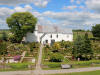 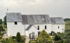 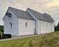 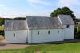 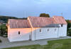 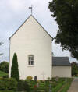 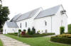 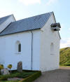 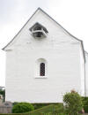


Hier dagegen aktuelle Luftbilder vom 13.05.2023 von Skråfoto - Screenshots vom 28.10.2023 - gehört zum "Styrelsen for Dataforsyning og Infrastruktur" - Skråfoto ist eine Webanwendung, die von der Dänische Agentur für Datenversorgung und Infrastruktur weltweit kostenlos bereitgestellt wird - frei von Urheberrechten.
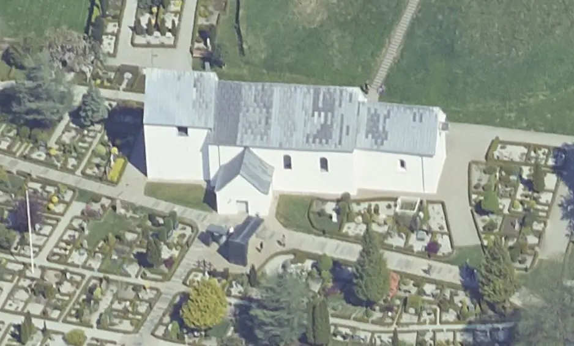
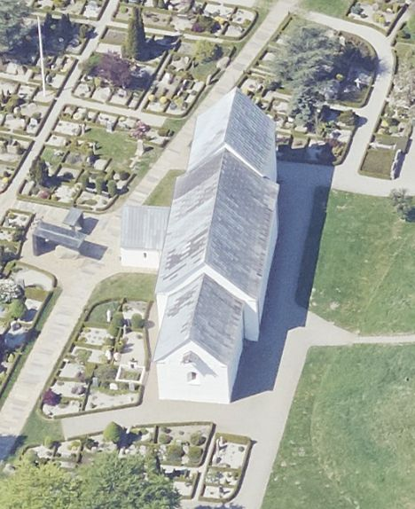
Das 18-Sekunden Drohnenvideo der Kirche von oben mit dem Titel "" wird über diese Webseite zum Download angeboten. Außerdem kann dort auch noch das 24-Sekunden Video mit dem Titel "" abgerufen werden, welches auch Einblick in die Kirche gewährt - beides eingefügt 20.11.2023. Für mein Empfinden sind die Filme aber irgendwie planlos aufgenommen, das geht sicher besser! Zumal auf diesen Webseiten die drei süddänischen UNESCO Welterbestätten, nämlich Kongernes Jelling, dänisches Wattenmeer und Christiansfeld präsentiert werden.
Eine Luftaufnahme der Kirche in Jelling - entstanden irgendwann zw. 1932-50 - zeigt den enormen Baumbestand und die sehr dichte Bebauung in ihrem Umfeld. Quelle: Danmark set fra Luften / Det Kgl. Bibliotek - Urheber: Aero Ekspress - entlehnt: 29.10.2023
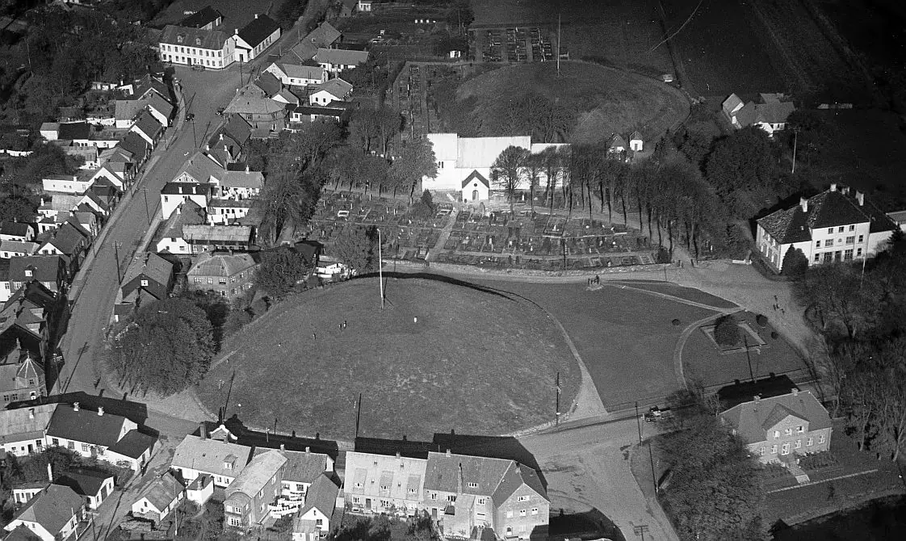
Auf dieser weiteren Luftaufnahme - siehe unten - aus dem Bestand von Danmark set fra Luften / Det Kgl. Bibliotek - Urheber: Aalborg Luftfoto - entlehnt: 29.10.2023 - aus den Jahren 1948-52 sieht man aber bereits deutliche Veränderungen, worüber die o.a. Aufnahme doch einiges vorher entstanden sein muss. Bei einer anderen Aufnahme mit dem obigen Baumbestand wird das Entstehungsjahr auch mit 1920-1939 angegeben. Nebenbei sind hier auch erstmals die großen Bautasteine zu sehen, die vom n-ö Ende des Südhügels ausgehen und östlich vom Nordhügel fortgeführt werden. Sie wurden in den Jahren 1941-42 bei der großen Ausgrabung des Südhügels geborgen (siehe hierzu: Ejnar Dyggve - Jelling Kongehøje - Udgravningen 1941 - Fra Nationalmuseets Arbejdsmark - 1943).
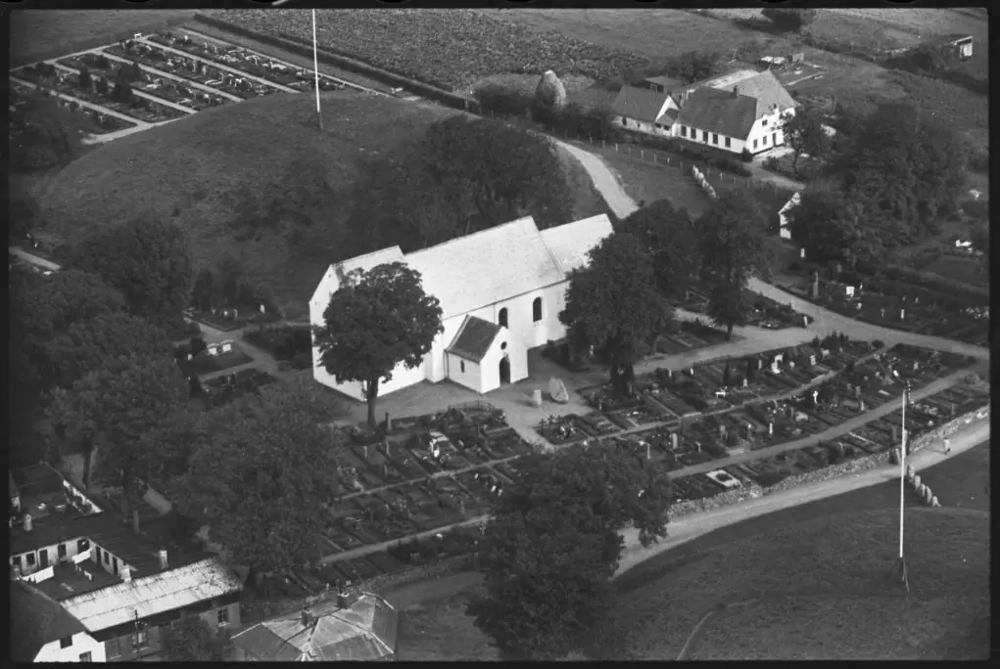
Über die Jahrhunderte gab es natürlich auch unzählige Zeichnungen der Kirche, von denen ich hier nur eine kleine Auswahl wiedergeben möchte:
Die erste Erwähnung der Kirche zu Jelling findet sich in den alten Aufzeichnungsbüchern des Ribe Domkapitel "Ribe Oldemoders kirke liste" aus dem Jahr 1376-89 mit einer Abgabengebühr von 5 Schilling Sterling.
Die älteste bildliche Wiedergabe der Kirche in Jelling hingegen wird Henrik Rantzau (*11.03.1526 - 31.12.1598), Statthalter der Herzogtümer Schleswig und Holstein, zugeschrieben. Henrik Rantzaus Prospekt über die Denkmäler in Jelling erschien erstmals in Peter Lindebergs berühmtem Werk Commentarii rerum memorablium in Europa, das 1591 in Hamburg veröffentlicht wurde. Dieses Bild zeigt eine Fotografie eines Originals, die ich am 26.09.2022 in der Königlichen Bibliothek - Den sorte Diamant - in Kopenhagen gefertigt habe.

Von Ole Worm (*13.05.1588 - 31.08.1654, Arzt, Universalgelehrter und der Begründer der Runologie) erschien 1643 - über 20 Jahre nach seinem Besuch (1621) vor Ort - sein bahnbrechendes Werk "Danicorum Monumentorum Libri Sex, Hafniae, 1643". Ab der S. 326 bis zur S. 341 bringt er eine erste und vollständige Beschreibung über Jelling heraus. Diese enthält Worms eigene Beschreibungen der Denkmäler, geographische Überlegungen und seine Überlegungen zur Funktion und Bedeutung der Denkmäler
Die u.a. Gesamtdarstellung von Jelling auf der S. 328 mit der Kirche in ihrem Mittelpunkt habe ich am Montag, 26.09.2022, in der Königlichen Bibliothek - Den sorte Diamant - in Kopenhagen aus einem dort verwahrten Exemplar selbst fotografiert.

Von einer Person namens C. Raben findet sich diese Zeichnung der Jelling Monumente - frei von Urheberrechten - aus dem Jahr 1743 über die Webseite von "Statens Museum for kunst" in Kopenhagen. Das Original hat die Maße H: 98 mm / B: 128 mm.

Dieses Blatt ist Teil einer Serie von 7 Landschaften, von denen sechs aus Simon Frisius' (1580-1629) Serie TOPOGRAPHIA VAIARUM REGIONUM kopiert sind, die nach einem Modell von Matthias Bril (1550-1584) ausgeführt und 1611 von Hendrick Hondius (*09.06.1573 - 1650, niederländischer Verleger, Zeichner und Kupferstecher) veröffentlicht wurde.
Im Jahr 1797 kam der Buchdrucker Aosmann Isfron von Vejle nach Jelling, wo er mit größter Aufmerksamkeit die Hügel und die beiden Runensteine studierte, diese Raritäten und Reliquien des Alters, die sonst nirgends in den nordischen Königreichen und Ländern zu finden sind." Zu seinem Besuch fertigte er ein kleines Manuskript mit dem Titel "Monumentum Jellingense" an, das in Zeichnungen und Texten die Denkmäler so beschreibt, wie Isfron sie sah. Hier ein Ausschnitt mit der bildlichen Wiedergabe der Kirche - eigenes Foto des Originals.
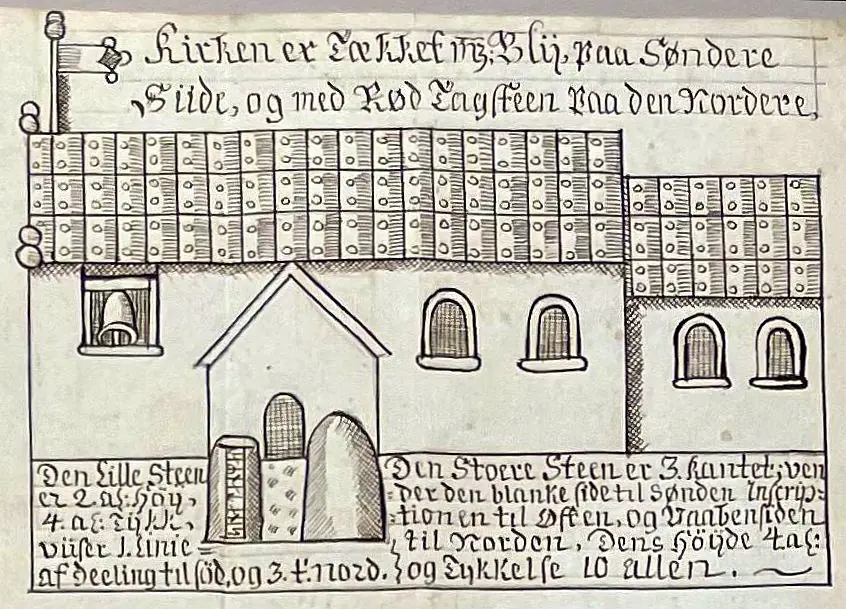
Das erhaltene Originalexemplar des Manuskripts befindet sich in der Handschriftensammlung der Königlichen Bibliothek in Kopenhagen und wird dort unter NKS 801 kvart vorgehalten (2 Teile - einmal das Manuskript - 10 beschriebene Seiten - und einmal die daraus entnommene Zeichnung der Monumente). Dieses Kleinod habe ich bei meinem dortigen Besuch am Montag, 26.09.2022, in Händen halten und fotografieren dürfen. Aus den einzelnen Fotos habe ich eine komplette Ausgabe des Originals als pdf-Datei erstellt.
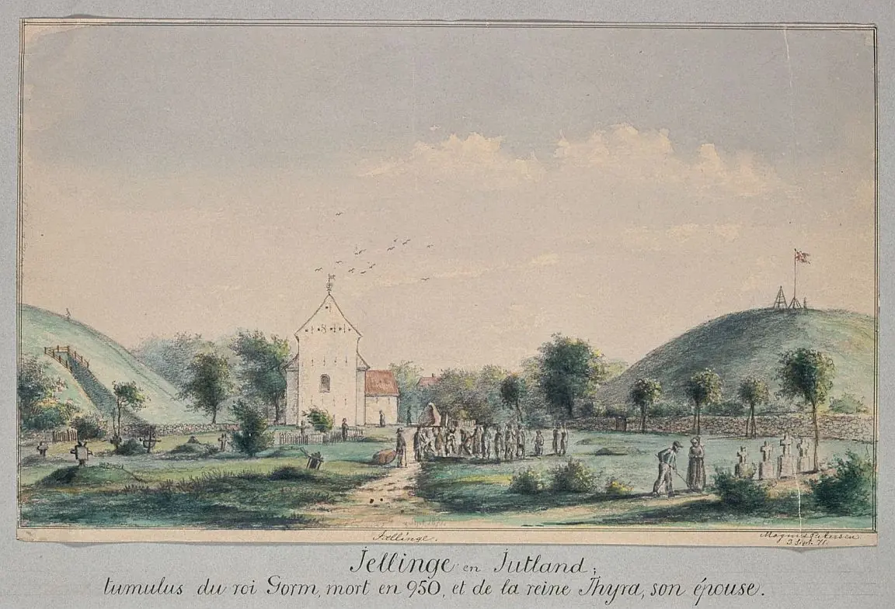
Diese tolle Zeichnung stammt von Magnus Petersen (*04.09.1827 - 01.02.1917, Archäologischer Zeichner und Restaurator), die er auf den 3. September 1871 datiert hat. Digitale Sammlung Nationalmuseum Kopenhagen - Fotograf: Lennart Larsen - Lizenz: CC-BY-SA
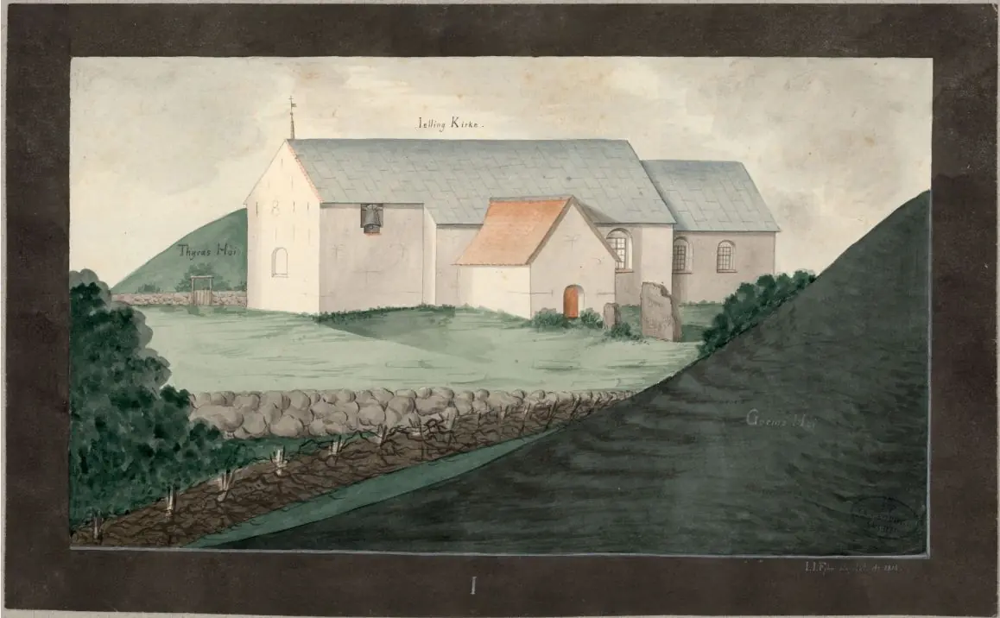
Bildquelle: Digitale Sammlung Nationalmuseum Kopenhagen - Lizenz: Public Domain - Der Künstler war J. J. Fyhn (*09.02.1788 - 25.02.1866, Pfarrer, Lokalhistoriker, Maler) - Bildnis von 1814
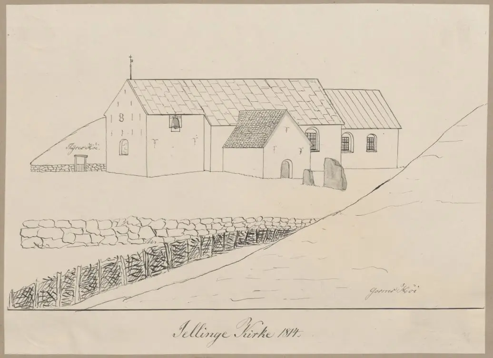
Bildquelle: Digitale Sammlung Königliche Bibliothek Kopenhagen - Lizenz: Public Domain - Der Künstler war Johann Gottfried Burman Becker (*26.4.1802 - 06.10.1880, Apotheker, Sammler). Er hat sicherlich das darüber abgebildete Gemälde von J. J. Fyhn als Vorlage benutzt.
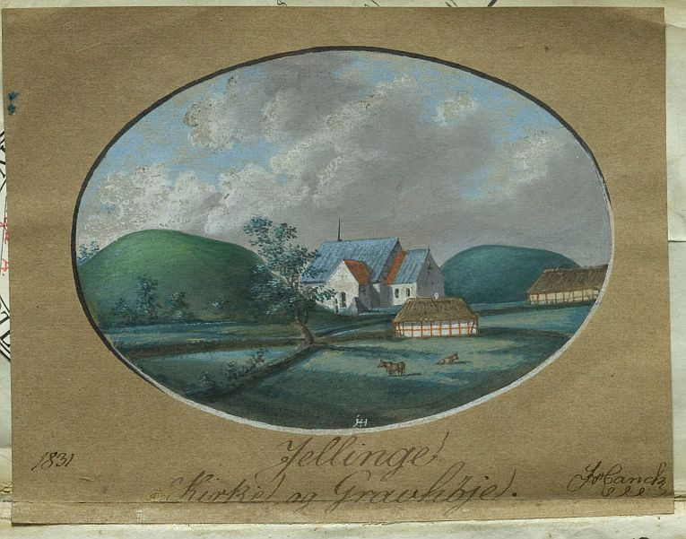
Diese Zeichnung von 1831 stammt von J. H. T. Hanck (Johan Henrik Trutzschler Hanck - *26. Januar 1776 - 23. Juli 1840 dänischer Zeichner, Maler, Assistenzprofessor). - Bildquelle: Digitale Sammlung NM Kopenhagen - Lizenz: Public Domain
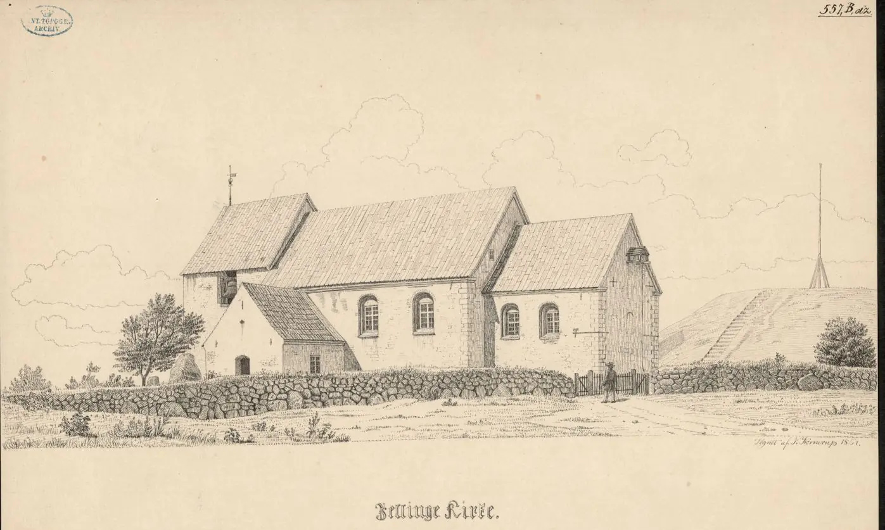
Diese detaillierte Zeichnung der Kirche aus dem Jahr 1861 stammt von Jacob Kornerup (*19.11.1825 - 09.03.1913, dänischer Archäologe und Zeichner aus Roskilde) - Bildquelle: Digitale Sammlung NM Kopenhagen - Lizenz: Public Domain
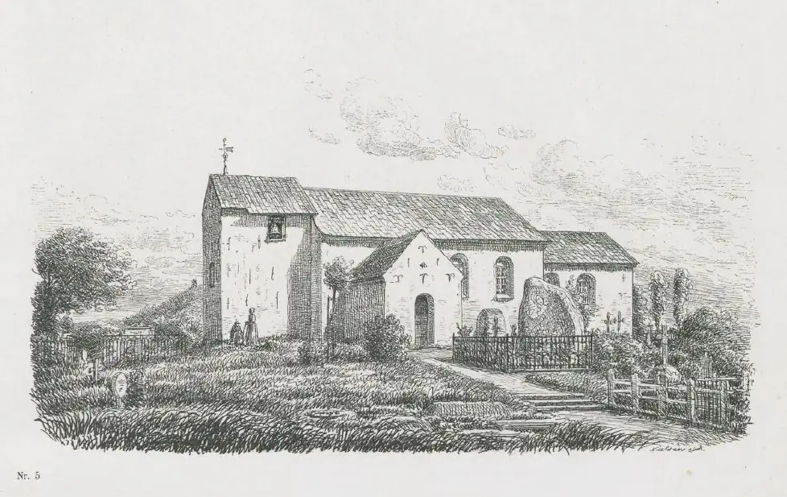
Lithografie der Kirche von Jelling aus dem Jahr 1866 von Ferdinand Richardt (*10.04.1819 - 29.10.1895, Lithograf) - S. 282 in seinem Buch "Danske Kirker, Slotte, Herregaarde og Mindesmærker" - Digitalisat der Kgl. Bibliotek København
Ejnar Dyggve (*17.10.1887 - 06.08.1961, Architekt, Archäologe) führte 1947 und 1951 kleinere Ausgrabungen in der Kirche von Jelling in Verbindung mit seinen Überlegungen zu dem im Abschnitt Südhügel bereits angeführten Bauta-Vi durch. Unter dem gestampften Fußboden der ältesten Kirche stieß er dabei auf noch einen Tonfußboden mit einem darin versenkten, kräftigen Pfostenloch, was als Hinweis auf einen heidnischen Göttertempel interpretiert wurde.
In Verbindung mit der Installation einer Fernheizungsanlage unter dem Boden der Kirche wurde Museumsinspektor Knud Jepsen Krogh (*1932, Archäologe) vom Nationalmuseum Kopenhagen im Jahre 1965 als Sachverständiger hinzugezogen. Während der Aufgrabung des Bodens bemerkte er eine Reihe von Steinen, konnte deren Funktion jedoch zunächst nicht unterbringen. Im Spätherbst 1976 (-1979) kam Krogh erneut zum Einsatz, da man nun eine durchgreifende Restaurierung der Kirche durchführen wollte. Zum erstenmal wurde diese nun als ganzes in die Untersuchungen einbezogen. Die Untersuchungen von Knud Krogh haben dann auch aufsehenerregende Ergebnisse erbracht.
Man war sich schon darüber klar gewesen, dass Spuren von früheren Gebäuden unter der jetzigen romanischen Feldsteinkirche Kirche waren, die von ungefähr 1100 stammt. Nun wurde festgestellt, dass es wahrscheinlich nicht weniger als drei Kirchen vor dieser gegeben hat. - 11. / 12. und 16. Jahrhundert - auf der u.a. Skizze von unten nach oben.
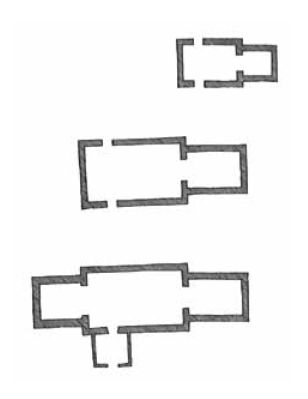
Bildquelle: Steen Hvass - Jelling Monumenterne deres historie og bevaring - 2011 - S. 45 - entlehnt 22.10.2023
Die jüngste war eine kleine Steinkirche, während die beiden größeren noch aus Holz gebaut waren. Die älteste von ihnen muss aus der Zeit Harald Blauzahns gewesen sein, nach seinem Übergang zum Christentum gebaut. Das interessante dabei ist, dass sie (Gesamtlänge 39,2 m / Kirchenschiff 20 m x 13,5 m / Chor 9,6 m x 9,6 m) offenbar größer als die jetzige Kirche gewesen ist. Das klingt vielleicht nicht imponierend für uns heutzutage, aber die übrigen Holzkirchen, von denen Spuren in Dänemark, ja im ganzen Norden, gefunden worden sind, sind alle viel kleiner gewesen. Allen sollte klar sein, dass die Kirche in Jelling die Kirche des Königs war.
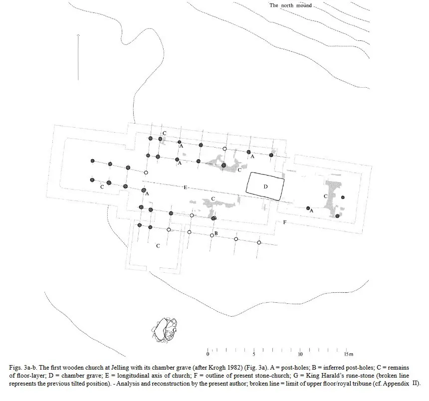
Quelle: Klavs Randsborg - KINGS JELLING - GORM & THYRAS PALACE - HARALDS MONUMENT & GRAVE - SVENDS CATHEDRAL - Acta Archaeologica vol. 79, 2008, S. 4
Das größte Aufsehen erregte jedoch das, was man unter dem Chorgewölbe fand. Hier tauchten die Überreste einer Grabkammer auf - 3,30 m lang, 2,00 m breit und etwa 1 m hoch - ähnlich der im Nordhügel, und diesmal waren Überreste von Menschen darin. Bald erschienen Teile von Gebeinen, nicht nur kleine und große Knochen, sondern auch ein ansehnlicher Schädel. Es schien, dass er von einer männlichen Person stammte. Es war aber auffällig, dass alles in wüstem Durcheinander gefunden wurde, z.B. lag ein großer Knochen ganz dicht neben dem Schädel - siehe Foto unten. Das könnte darauf deuten, dass hier eine Umbettung stattgefunden hatte und dies nicht das ursprüngliche Grab war. Andere Wissenschaftler sind inzwischen aber der Auffassung, dass die Knochen z.B. auch durch gestiegenes Grundwasser durcheinandergespült worden sein könnten.
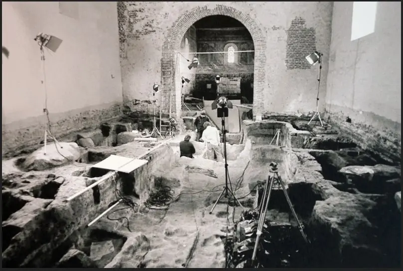
Ausgrabung der Grabkammer 1978 - Bildquelle: Steen Hvass - Jelling Monumenterne deres historie og bevaring - 2011 - S. 45 - entlehnt 21.10.2023 - Foto: Jørn Kjær Nielsen
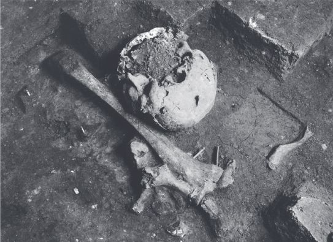
So lagen einige der wichtigsten Skeletteile in der Grabkammer - siehe Text oben. Es ist nicht denkbar, dass die Skeletteile in dieser Weise gelegen hätten, wenn das Begräbnis ursprünglich hier geschehen wäre. Bildquelle: Jelling Guiden 2023-24, S. 17
Neben diesen Knochenfunden tauchten auch Reste der Grabbeigabe auf. Etwa 500 Fragmente dünner gedrehter Goldfäden, die aus einem Stück goldgewebtem Stoff stammen, also in sehr kostbarer Kleidung oder einem Teppich eingewebt gewesen sein müssen. Und nicht zuletzt kamen zwei prachtvolle Schmuckstücke an den Tag.
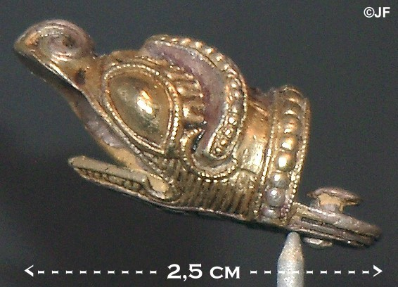
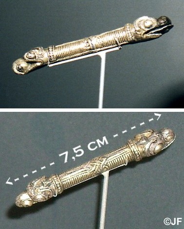
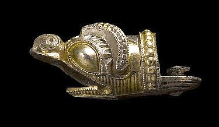
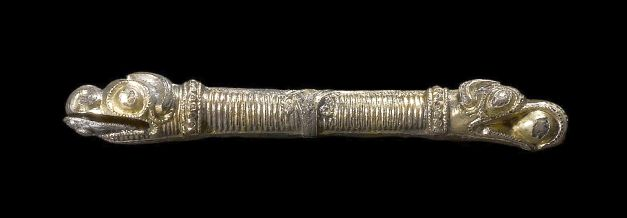
Bildquelle: Digitale Sammlung Nationalmuseum Kopenhagen - links - rechts - Lizenz: jeweils CC-BY-SA - Fotos: Roberto Fortuna und Kira Ursem
Sie waren aus Silber mit einem Überguss von Vergoldung und mit Mustern in Niello, einer blauschwarzen Schwefelmischung - alles in allem eine bewundernswerte handwerkliche Leistung. Von größtem Interesse war es aber, dass die Schmucksachen in einem Stil und mit einer Technik gestaltet waren, die in auffallendem Grad an die im Nordhügel gemachten Funde erinnerten, darunter an den berühmten Jellingbecher.
So deutete alles auf die Idee, die Knud Krogh schon gehabt hatte, als er die Ausgrabung begann: dass Harald Blauzahn nach seinem Glaubenswechsel seine Eltern aus dem heidnischen Grabhügel umgebettet und sie unter der großen Kirche beerdigt hatte, die er bauen ließ. Damit schien das Rätsel um die leere Kammer im Nordhügel gelöst.
Die Knochen und
Zähne,
die gefunden worden waren, wurden sehr genau mit allen modernen technischen
Hilfsmitteln untersucht. Das Ergebnis war, dass sie von einem Menschen,
einem Mann von ca. 173 cm Grösse mit verhältnissmäßig
kräftiger Muskulatur, mindestens 35-50 Jahre alt, stammen können. Alle
Wahrscheinlichkeit
spricht dafür, dass es sich um Haralds Vater,
Am
Mittwoch, dem 30. August 2000, wurde ein
Schrein mit den irdischen Überresten
von König
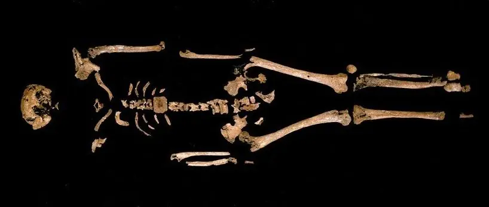
Bildquelle: Nationalmuseum in Kopenhagen - zum Artikel der Webseite "Graven under kirkegulvet" - abgerufen: 21.10.2023 - Versuch der Skelettrekonstruktion des Anthropologen Dr. med. Jørgen Balslev Jørgensen
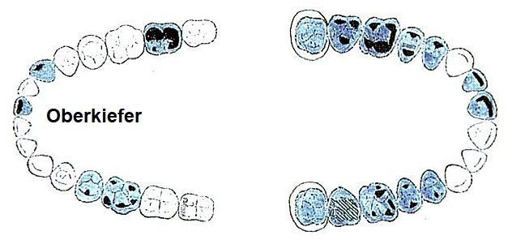
Versuch von Zahnarzt Verner Alexandersen die aufgefunden Zähne - blau eingefärbt - in ein Zahnschema einzufügen (müsste man zur korrekten Darstellung nach rechts hochkant stellen). Quelle: Gåden om Kong Gorms Grav, Historien om Nordhøjen i Jelling - von Museumsinspektor Knud Jepsen Krogh (*1932, Archäologe), 1993, S. 241
Die Knochen / Zähne wurden in einem 88 kg schweren Zinkschrein mit den Maßen 52 cm x 52 cm und 65 cm Höhe in eine Betonkammer im Fußboden, mittig vor der Treppe zum Chor, eingelassen. Jedes einzelne Knochenteil wurde vorher in säurefreies Seidenpapier gewickelt und danach in aufgeschäumtes Plastikmaterial gelegt, wodurch Formen entstanden, die den einzelnen Teilen entsprechen. Die Knochen liegen in 6 Lagen übereinander. Ganz oben liegt der Schädel, darunter das Rückgrat, usw. Zuletzt wurde aus dem Zinkschrein die Luft abgepumpt und er wurde verlötet. Das Kammergrab wurde mit einem Deckstein, der von dem Künstler Jørn Larsen gestaltet wurde, abgedeckt und mit zwei Lacksiegeln des Nationalmuseum Kopenhagen versehen. Der Stein trägt die Inschrift: "KONG GORM - HØJSAT 959 - OG SIDEN GRAVLAGT HER" - Übersetzt: "KÖNIG GORM IM GRABHÜGEL BEERDIGT 959 UND SPÄTER HIER BEIGESETZT". Der Schrein und der Deckstein sind gestiftet von dem Ny Carlsbergfond.
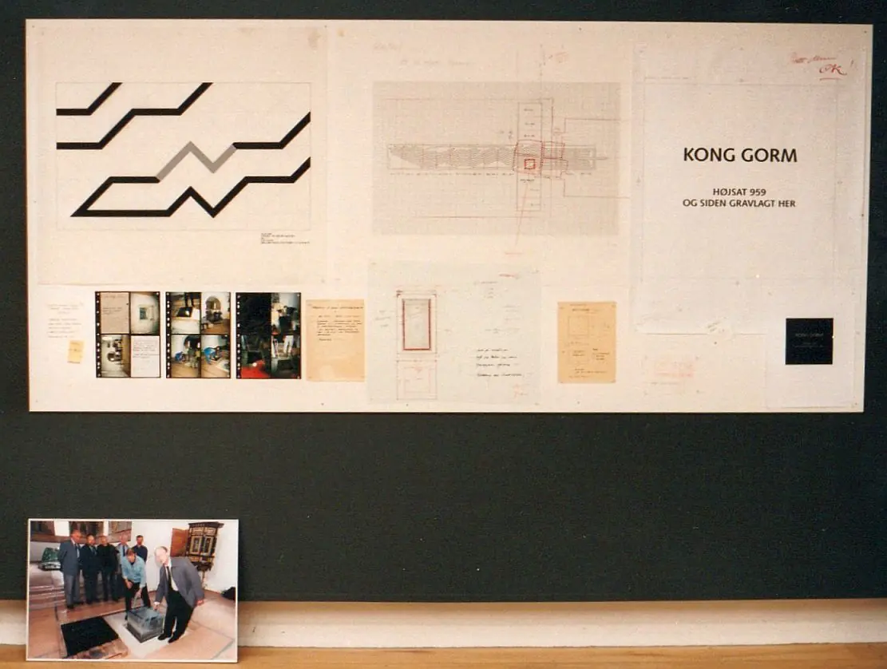
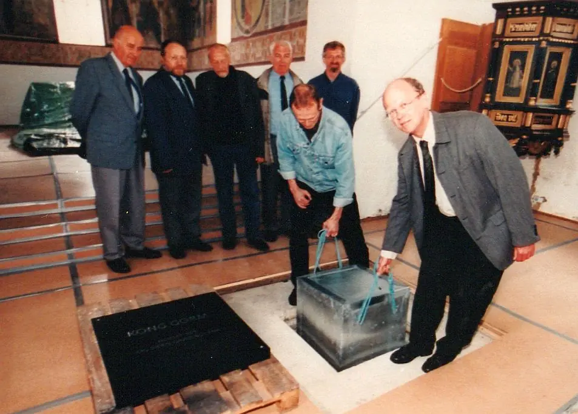
Eigene Aufnahmen vom 24.05.2001 - Kongernes Jelling
Nachdem der neue Granitfussboden komplett verlegt ist, ist das Grab mit dem schwarzen Deckstein nicht mehr sichtbar. Allerdings wurde die Stelle mit einer silbernen Markierung im Bodenbelag kenntlich gemacht, wie auf dem nachfolgenden Foto deutlich erkennbar ist.
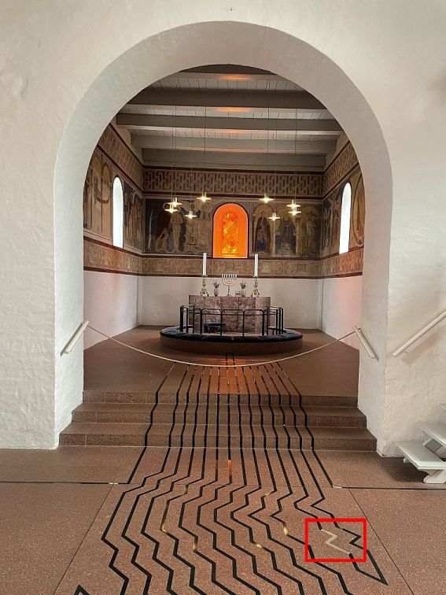
Weiterhin wurde die Kirche auch noch im Innern von dem o.a. Künstler neu ausgeschmückt. Die Ausschmückung umfasst den gesamten Kirchenraum, u.a. einen neuen Fußboden aus Granit, einen neuen Altar und neue Glasmalereien.
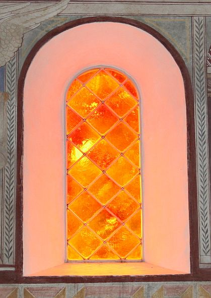
Die roten Nuancen des Ostfensters - siehe oben - strahlen die Morgenröte aus und werfen ihr Licht auf den Grundstein der Verzierung, den Altartisch und weiter in den Kirchenraum hinaus, wie man auf dem nachfolgenden eigenen Foto vom 21.08.2013 schön erkennen kann.
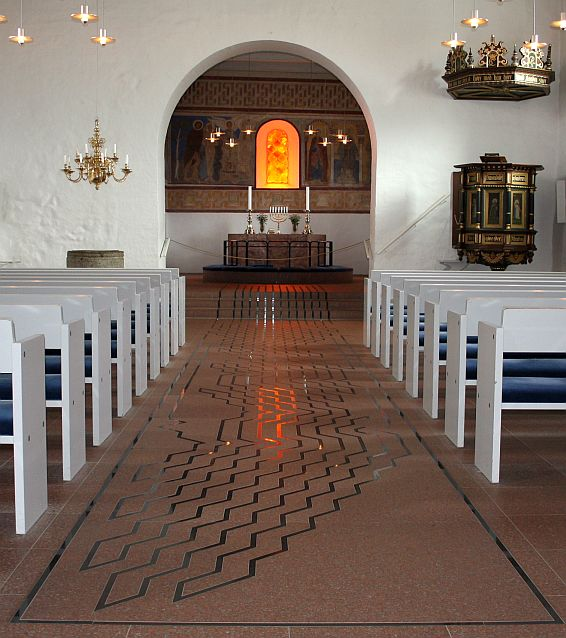
Die Fenster nach Süden sind aus französischem Blockglas verfertigt. In den zwei großen Südfenstern im Kirchenschiff sind zarte grüne und blaue Nuancen verwendet, sowohl helle als auch dunkelblaue Farben. Nicht Symbole, sondern Signale. Sie erinnern an Frühling, Meer, Blitze und Himmel. Der Künstler hat an nordischen Frühling und die Begegnung der Wikinger mit dem weissen Christus gedacht.
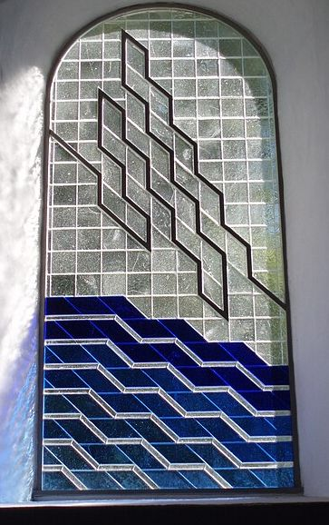
Nach Abschluss dieser Arbeiten wurde die Kirche bei einem Festgottesdienst am 3. Dezember 2000, um 10 Uhr, der Öffentlichkeit übergeben.
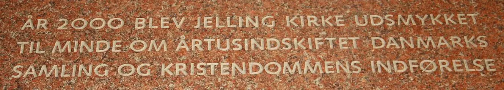
Übersetzung: "Im Jahr 2000 wurde die Kirche von Jelling neu ausgeschmückt zum Gedenken an die Einigung Dänemarks zur Jahrtausendwende und der Einführung des Christentums". - Eigenes Foto vom 21.08.2013 - Fußbodenplatte
Anfang Mai 2011 führte das Nationalmuseum im Rahmen des Jelling-Projekts und zu den Steinkirchen Ostjütlands eine kleine archäologische Untersuchung vor dem Chor der romanischen Steinkirche in Jelling durch. Damit sollte bestätigt oder widerlegt werden, ob die Kirche einen aus Stein gebauten Vorgängerbau gehabt haben könnte. Diese Annahme beruhte auf der Tatsache, dass der Chor in der sehr bescheidenen Kirche ungewöhnlich groß ist. Im Allgemeinen haben romanische Kirchenchöre einen annähernd quadratischen Grundriss, hier ist der Grundriss jedoch stark rechteckig. Dies könnte daran liegen, dass der Chor ursprünglich nicht als Chor, sondern als Langhaus in einer kleineren Kirche errichtet wurde, zu der ein kleinerer Chor im Osten gehört haben könnte. Die bestehende Kirche wäre somit erweitert worden, indem das Kirchenschiff der älteren Kirche in einen Chor umgewandelt, der ältere Chor abgerissen und ein neues Kirchenschiff gebaut worden wäre. Dieser Ansatz wäre unter dänischen mittelalterlichen Kirchen ungewöhnlich, weist jedoch nicht ohne Parallelen auf. In Ravnkilde im Himmerland konnte das Nationalmuseum zuvor feststellen, dass die Kirche auf diese Weise erweitert worden war, und die Möglichkeit musste auch in Jelling getestet werden.
Der unmittelbar unter dem heutigen Gelände verborgene Sockel des bestehenden Chorgiebels wurde in einem Längsgraben vorgezogen und außerhalb des nördlichen Teils des Giebels ein kleineres Feld angelegt. Hier musste nach der nördlichen Seitenwand des vermeintlich abgerissenen Chores gesucht werden, was offenbar gelang. Eine Ansammlung von Steinen im Feld könnten Reste eines Fundaments sein, und als das Feld Ende Mai erweitert wurde, konnte diese Interpretation tatsächlich bestätigt werden.
Im Zusammenhang mit der erweiterten Grabung wurde auch eine Mauerwerksuntersuchung des stehenden Chorgiebels durchgeführt, um weitere Spuren zu finden, die der älteren Phase der Kirche zugeordnet werden könnten. Der Fassadenkalkputz wurde in einem horizontalen Band über dem Giebel entfernt, um das ursprüngliche Travertinsteinmauerwerk freizulegen, und auch hier kam die ältere Kirche in Sicht. Am Giebel, der Chor und Kirchenschiff trennte und die Triumphwand der Kirche bildete, blieben Teile der Nordseite des Chorbogens sowie ein Teil seines rundbogigen Strebepfeilers erhalten. Auf dieser Grundlage konnte wahrscheinlich gemacht werden, dass die Eröffnung ca. 1,8 m breit; seine Südseite blieb jedoch nicht erhalten. Beim Abriss des älteren Altarraumes wurde die Öffnung ausgehöhlt, um die Vermauerung mit Travertinquadern in Verbindung mit dem älteren Mauerwerk durchführen zu können. Der Bogen selbst wurde durch das Ostfenster des Chorgiebels zerstört, das in seiner heutigen Form aus der zweiten Hälfte des 19. Jahrhunderts stammt. Auch im südlichen Teil des Chorgiebels wurde eine Reparatur des Travertinmauerwerks neben der Verbindungsstelle der Seitenwand des älteren Chores festgestellt. Die einzigartigen Travertinsteine zum Kirchenbau stammen aus den kalkhaltigen Quellen südlich der Stadt.
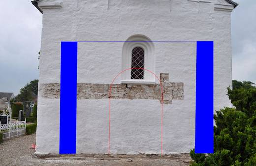
Bildquelle: Nyfunden 1000-tals stenkirke i Jelling von Thomas Bertelsen
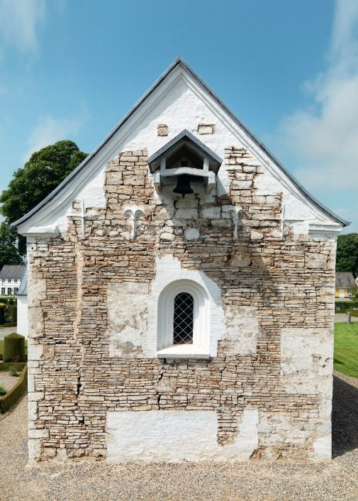
Bildquelle: Danmarks Kirker - Jelling Kirke - S. 3037 - Foto: Roberto Fortuna - 2012 - abgerufen: 28.10.2023
Aufgrund der begrenzten Untersuchungen konnte festgestellt werden, dass die
romanische Steinkirche in
Jelling
eine besonders komplizierte Baugeschichte aufweist, da der heutige
Chor zu einer älteren Steinkirche an der
Stelle gehört. Vermutlich wurde auch der abgerissene Chor aus
Travertinstein gebaut, die Bauart der ersten Kirche
lässt sich jedoch ohne weitere Untersuchungen nicht genauer bestimmen. War der
abgerissene Altarraum, wie üblich, etwa quadratisch, so lassen das gefundene
Fundament und die Mauerwerksspuren jedoch darauf schließen, dass dieser
Bauabschnitt ca. 5,5 m und mit dem Kirchenschiff die gesamte Kirche 16,5 m lang
war. Damit handelt es sich um eine Kirche, die im Vergleich zu den erhaltenen
mittelalterlichen Kirchen Dänemarks zu den kleinsten gehört.
Das
Baudatum der älteren Kirche kann nur geschätzt
werden, doch die byzantisch inspirierten Fresken im Chor,
die möglicherweise erst nach dem Abriss des älteren Chores
entstanden sind, stammten aus den ersten Jahrzehnten
des 12. Jahrhunderts und müssen daher etwas älter sein.
Im Jahr 1874 stürzte das östlichste Gewölbe der
Jelling
Kirche ein und an der Ost- und Nordwand
des Chores erschien ein Fries mit fast lebensgroßen
menschlichen Figuren.
Der Fries wurde 1875 von
Magnus Petersen
(*04.09.1827 -
01.02.1917, Archäologischer Zeichner und Restaurator) kopiert und ersetzt.
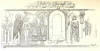 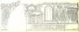


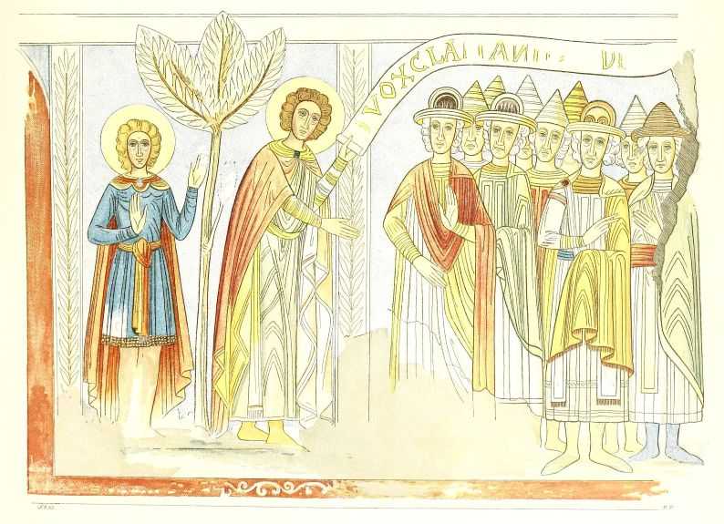
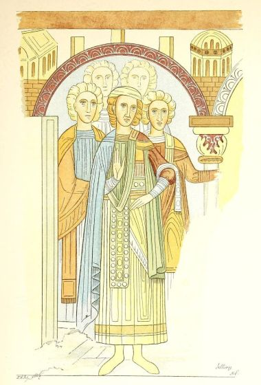
Bildquelle: Magnus Petersen - Beskrivelse og afbildninger af kalkmalerier i danske kirker - 1895 - Abbildungen den Tafel I bis III entnommen
Die Fresken wurden 1926 von Johan Thomas Skovgaard (*29.08.1888 - 25.10.1977, Maler) restauriert, der bei der Gelegenheit auch die Wandgemälde an der Südseite des Chores malte.
Eine neuerliche Restaurierung der Ost- und der Nordwand im Chor fand im Jahr 1979 durch das Nationalmuseum statt (Charles Gallefant, Kirsten Trampedach und Mette K. Jensen).
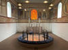 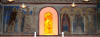 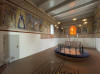 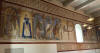 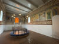 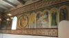


Es ist sehr wahrscheinlich, dass Jelling im 11. Jahrhundert seine erste Steinkirche hatte, und sein erhaltenes Kirchenschiff, der Chor der heutigen Kirche, ist eine gute Wahl für das älteste erhaltene Steingebäude in Jütland. Dass das kleine Gebäude zu den frühesten Steinkirchen des Landes gehört, scheint außer Zweifel. Der Bau einer Steinkirche in Jelling zu einer Zeit, als die Holzbaukunst im Land noch vorherrschend war, zeigt, dass der Ort auch im 11. Jahrhundert noch eine große Bedeutung hatte. Die bescheidene Größe der Kirche könnte darauf hindeuten, dass sie als Bauernkirche wahrgenommen werden sollte, die von einem großen Mann, wahrscheinlich dem König, erbaut wurde. Die Erweiterung der Kirche mit dem Bau des jetzigen Kirchenschiffs und dem Abriss des alten Chors könnte darauf zurückzuführen sein, dass die Kirche zur Pfarrkirche für die örtliche Bevölkerung und daher zu klein wurde.
Quelle: Nyfunden 1000-tals stenkirke i Jelling von Thomas Bertelsen
Die Aufarbeitung früherer Grabungsergebnisse durch das Jelling-Projekt (2008-2011) ergab, dass die Bauspuren unter der heutigen Kirche auch als Spuren eines oder mehrerer Gebäude interpretiert werden können, die der klassischen Hallenbauarchitektur der Wikingerzeit mit geschwungenen Wänden und einem großen offenen Raum in der Mitte des Gebäudes folgen. Daher ist eine andere und wahrscheinlich plausiblere Interpretation, dass zumindest die ältesten Bauspuren unter der heutigen Kirche von einem größeren Saalbau stammen, wie man ihn z.B. von den Adelsresidenzen der Wikingerzeit in Lejre und Tissø auf Seeland kennt. Auf jeden Fall passen die Pfostenlöcher besser zur Art und Weise, wie in der späten Wikingerzeit Hallen gebaut wurden, als mit der Art und Weise, wie in Skandinavien etwas später in der Wikingerzeit Kirchen gebaut wurden. Dazu wurde ein grafisches Modell von Peter Jensen, Arkæologisk IT, Aarhus Universitet, erstellt und in dem Artikel "Bygningsspor og graven under Jelling Kirke" - Internet Beitrag der Aarhus Universität - 2017 - veröffentlicht - entlehnt am 28.10.2023.
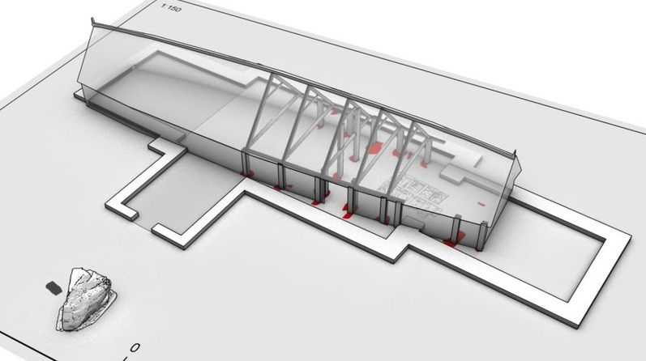
Ein Vorschlag für eine Rekonstruktion des Hallengebäudes, das sich wahrscheinlich an der Stelle befand, an der danach die heutige Steinkirche um ca. 1100 erbaut wurde. Der Grundriss der heutigen Steinkirche ist weiß markiert, und einige der Pfostenlöcher, die in den 1970er Jahren unter dem Kirchenboden entdeckt wurden, sind rot markiert. Wie man sieht, entsprechen die Pfostenlöcher der Position der Pfosten an einem Ende eines typischen Hallenbaus aus der Wikingerzeit. Im Vordergrund der Rekonstruktion ist der große Runenstein von Harald Blauzahn zu sehen.
In dieser Grafik von Gert Gram, die auf Grundlage von Daten von Peter Jensen, Arkæologisk IT, Aarhus Universitet, erstellt wurde, ist diese Erkenntnis bereits visualsiert worden. Hier wird dargestellt wie der Gesamtkomplex in Jelling um 970, als noch an der Erstellung des Südhügels gearbeitet wurde, ausgesehen haben könnte. Quelle: Artikel "Nordhøjen i Jelling, ca. 959" auf der Webseite "danmarkshistorien.dk" - entlehnt am 29.10.2023 - deutlich vergrößerte Wiedergabe über Mausklick auf die Grafik.
Allgemeine Infos zur Kirche:
Die Kirche ging 1532 in den Besitz des Königs über - Friedrich I. von Dänemark und Norwegen, *07.10.1471 - 10.04.1533 - und wechselte im Verlauf der Jahrhunderte mehrfach den Besitzer. Die erste Wahl eines Kirchengemeinderates erfolgte 1903.
Die Kanzel in der Kirche ist im Renaissancestil von etwa 1650, aber die Christusbilder in ihren Feldern sind erheblich jünger. Bemerkenswert sind die königlichen Monogramme in deren Schalldeckel, wo seit König Christian V. (15.04.1646 - 25.08.1699) die dänischen Regenten, die die Kirche besucht haben, eingetragen worden sind.
Die Orgel ist 1960 von Marcussen & Sohn gebaut worden und ist mit 16 Stimmen ausgestattet.
Im Turmraum der Kirche sieht man an der Nordwand sechs Apostelfiguren von etwa 1500. Von den ursprünglich zwölf sind sechs aber etwa um 1900 verschwunden. Diese wurden in den 1970er Jahren neu angefertigt.
Literaturhinweise / Informationen:
Magnus Petersen - Beskrivelse og afbildninger af kalkmalerier i danske kirker - 1895 - Bildmaterial u.a. Tafel I / Tafel II / Tafel III
Ejnar Dyggve - Jelling Kongehøje - Udgravningen 1941 - Fra Nationalmuseets Arbejdsmark - 1943 - S. 19-31
Steen Hvass - De kongelige monumenter i Jelling - deres historie, forvaltning og formidling - 2000
Klavs Randsborg - KINGS JELLING - GORM & THYRAS PALACE - HARALDS MONUMENT & GRAVE - SVENDS CATHEDRAL - Acta Archaeologica vol. 79, 2008, S. 1-23
Steen Hvass - Jelling Monumenterne deres historie og bevaring - 2011
Jellingprojektet - Nyfunden 1000-tals stenkirke i Jelling - von Thomas Bertelsen - 2011
Jellingprojektet - Frådstenskirker i Østjylland - - von Thomas Bertelsen
Anne Pedersen - Jelling im 10. Jahrhundert - Alte Thesen, neue Ergebnisse - in: Hg.: Hofmann/Kamp/Wemhoff - Die Wikinger und das fränkische Reich - Identitäten zwischen Konfrontation und Annäherung - MittelalterStudien Band 29 - Paderborn 2014 - S. 275 - 296
Anne Pedersen und Per Kristian Madsen - Jelling zur Zeit Harald Blauzahns - ein weit offenes Zentrum. in: Interaktion ohne Grenzen, Beispiele archäologischer Forschungen am Beginn des 21. Jahrhunderts, Band 2, 2017, S. 649-662
Archäologen rekonstruieren per 3D-Druck Schädel des Wikingerkönigs Gorm des Alten - 22.11.2017
Bygningsspor og graven under Jelling Kirke - Internet Artikel der Aarhus Universität - 2017Auf den Webseiten des Dänischen Nationalmuseums - Danmarks Kirker - kann man eine in dänischer Sprache gehaltene 143-seitige, bebilderte Abhandlung als pdf-Datei zur Baugeschichte/Innenausstattung der Kirche von Jelling aus dem Jahr 2022 abrufen. Diese Abhandlung ist nicht nur brandneu, sondern handelt auch den kompletten Jelling Komplex ab - Runensteine / Grabhügel / Schiffssetzung / Palisade / Kirche mit Wandgemälden / usw. - und alles mit tollen Fotos.
Jelling Kirche (Webseite der Kirchengemeinde)Digitale Bildersammlung des Nationalmuseums Kopenhagen zum Suchbegriff "Jelling Kirke"
Jelling Kirke - Dansk - English - Deutsch (12-seitiger Prospekt)